手机端
Android 与 iOS 双端覆盖，重点强化首页发现、沉浸播放器、主题壁纸与铃声剪辑。
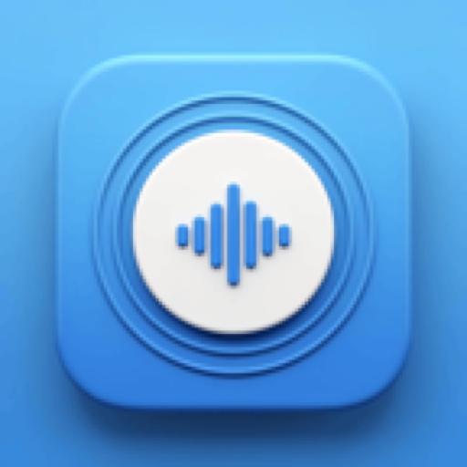
动听音乐Product Overview
动听音乐覆盖 Android、iOS、车机、平板、TV 端、鸿蒙端（开发中）、Windows 与 macOS。移动端强调高频使用下的流畅体验与个性化设置，桌面端进一步扩展歌词、音效、本地音乐与下载管理能力，不同终端在交互逻辑与内容体验上保持一致。
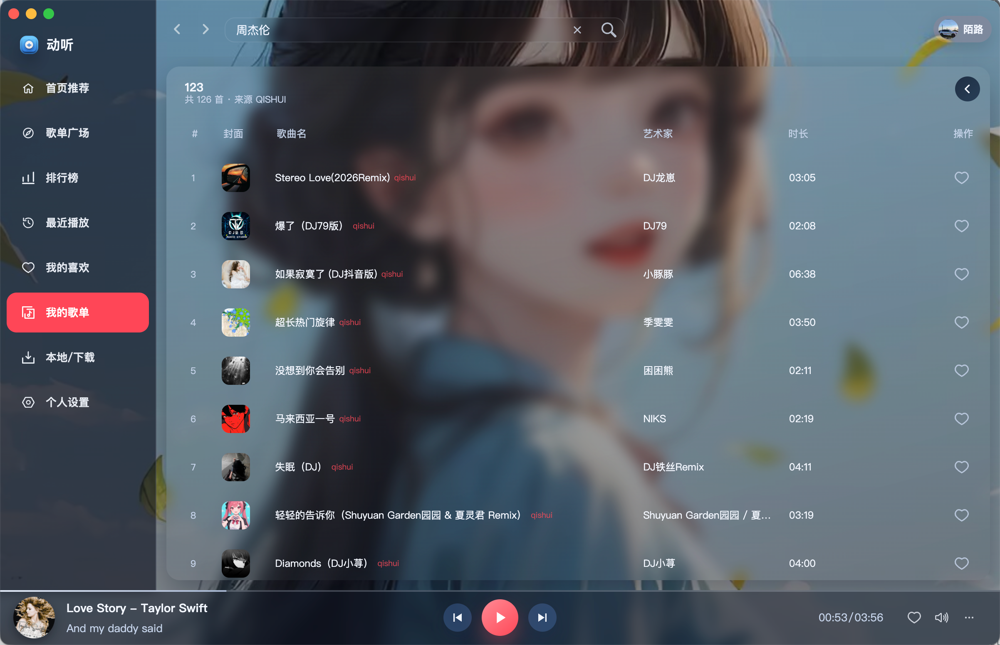
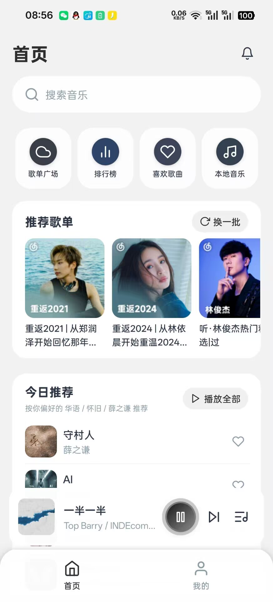
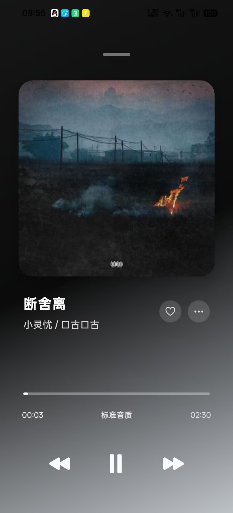
Platform Coverage
Android 与 iOS 双端覆盖，重点强化首页发现、沉浸播放器、主题壁纸与铃声剪辑。
围绕驾驶场景优化，延续大按钮、直达播放与蓝牙歌词等能力，降低操作负担。
更大可视区域带来更舒展的歌词、歌单与播放布局，兼顾横竖屏浏览。
Windows 与 macOS 桌面版进一步扩展本地管理、下载队列、桌面歌词与专业音效控制。
面向客厅大屏与遥控器操作，强化横向浏览、焦点状态、远距离可读性与家庭播放场景。
鸿蒙版本正在开发中，将围绕系统生态适配、跨设备协同与一致的播放体验持续完善。
Visual Showcase
Mobile Experience
这一部分重点展示首页推荐、沉浸播放、主题壁纸、应用图标以及设置层的个性化入口，适合覆盖用户最常用、最直观的听歌场景。
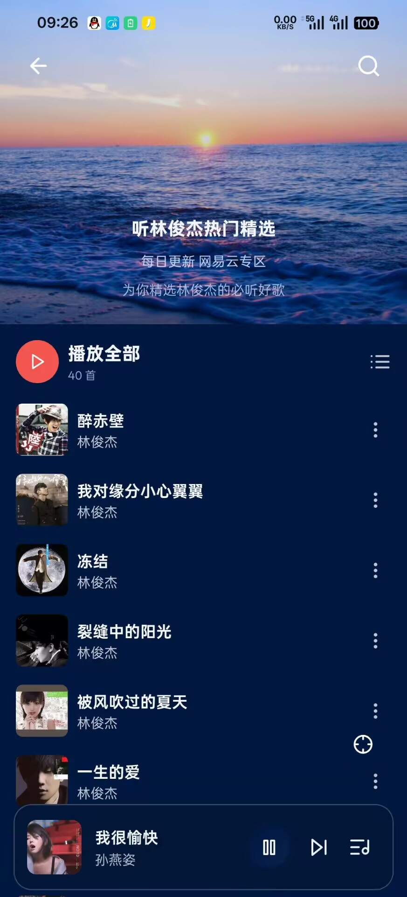
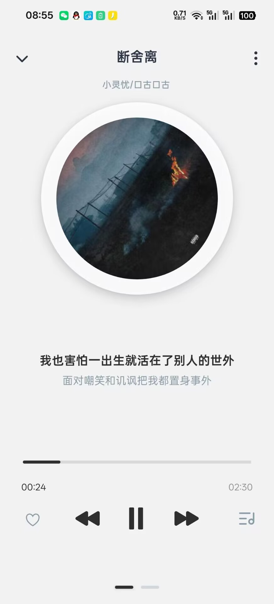
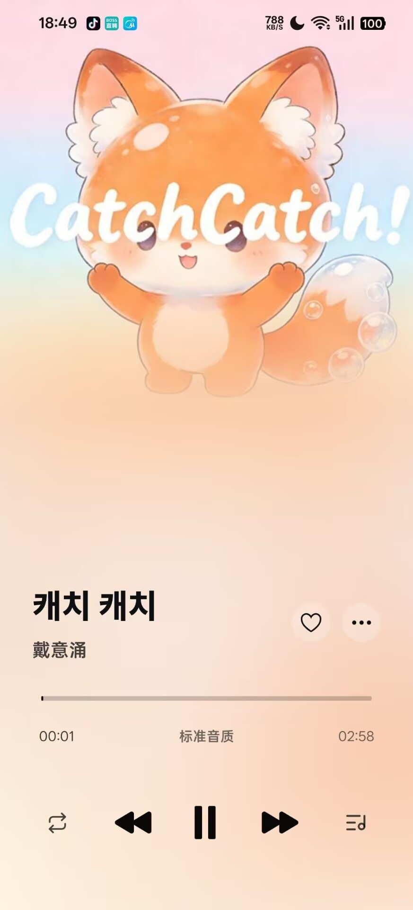
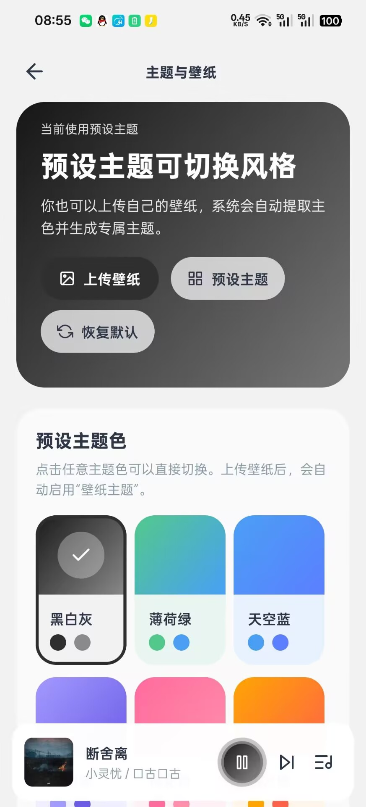
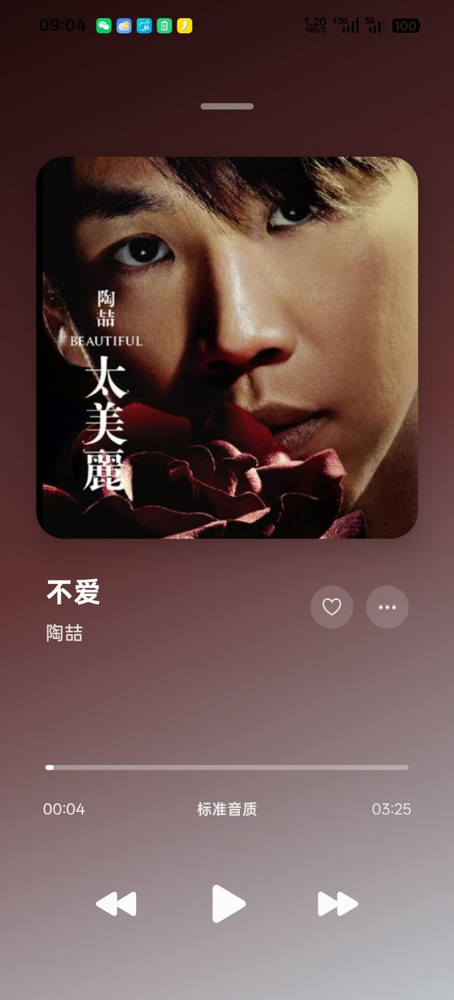
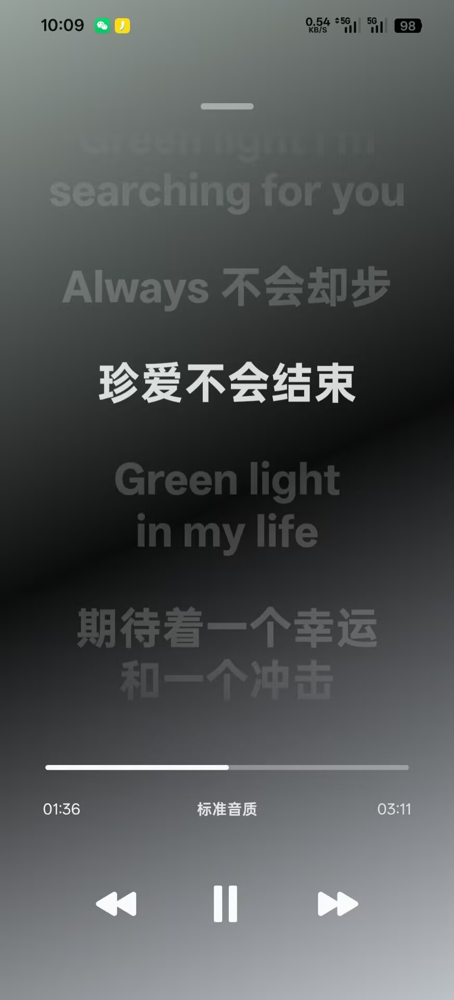
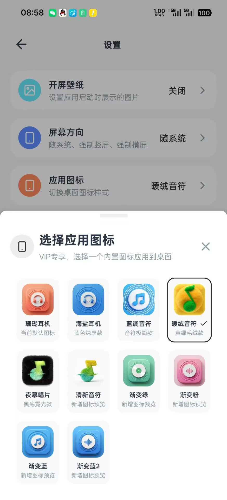
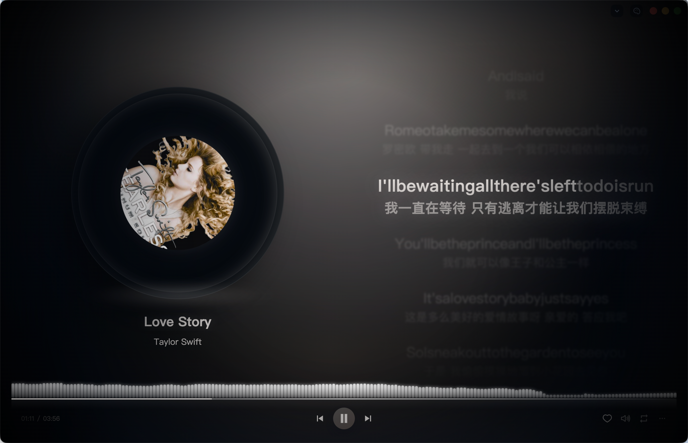
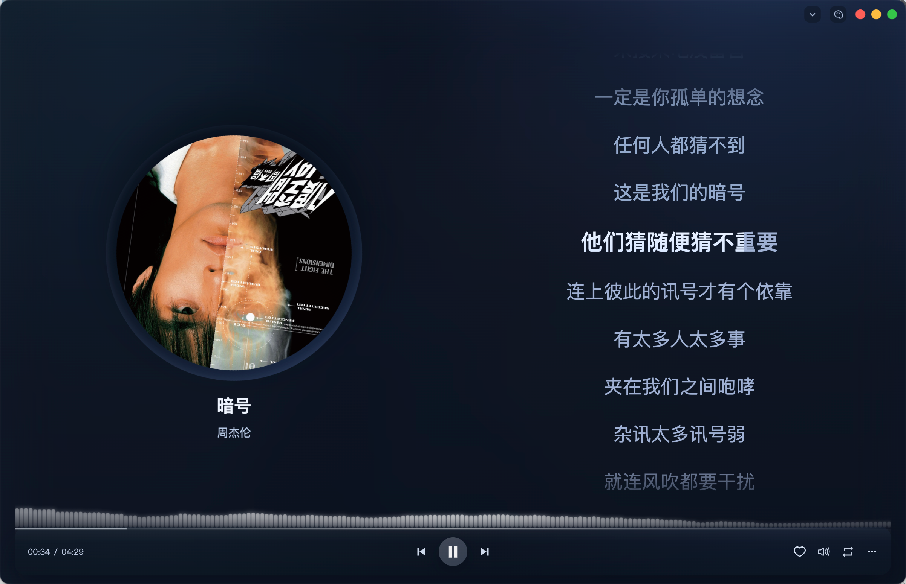
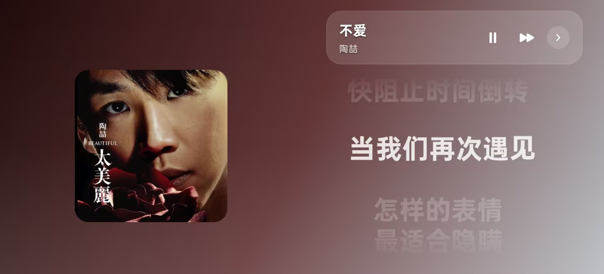
Desktop Experience
更大的界面空间承载更完整的信息结构，适合桌面办公、专注聆听以及对播放控制有更高要求的用户。
Key Features
Feature Focus
播放页支持更聚焦的封面展示、歌词高亮、翻译歌词与歌词偏移调节，在视觉表现与信息可读性之间取得更好的平衡。
What Makes It Official
Download & Deploy
当前已提供 Android 版本下载入口。iPhone、iPad、Windows、macOS、车机、平板、TV 端与鸿蒙端（开发中），可通过官方群或 QQ 联系获取最新版本与适配说明。